bridged helps younger and older generations better connect with each other through guided storytelling instead of fast, performative posting. I helped shape the user research and design a prompt-based storytelling concept in a 3 day designathon sprint.
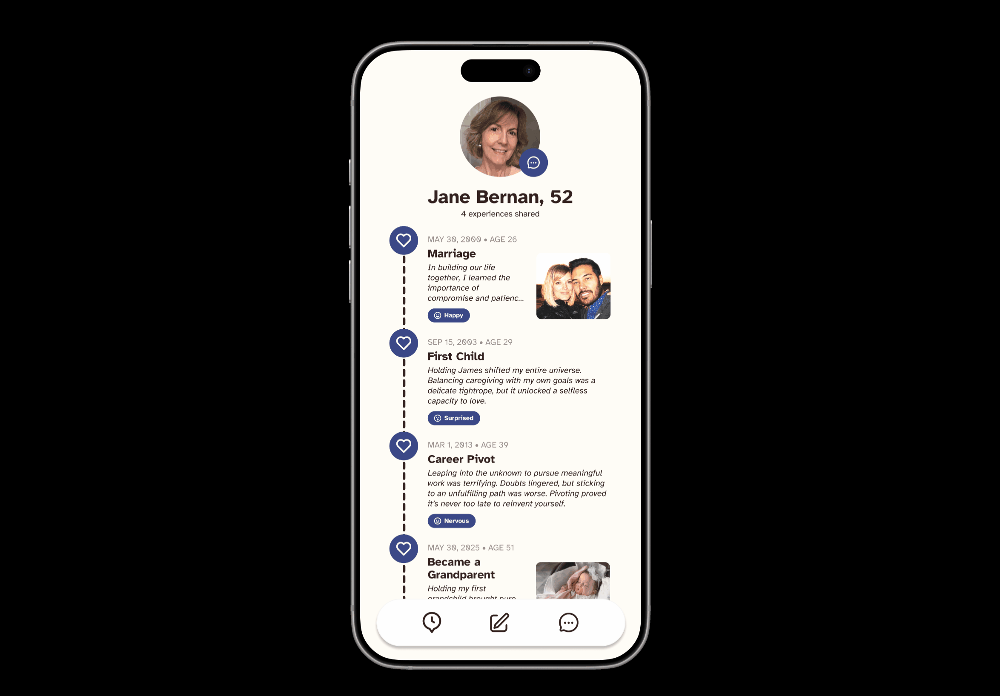
01 Overview
We were asked how design might help younger and older generations learn from one another and build meaningful relationships.
Social platforms aren't usually built for that kind of exchange. They reward fast, performative posts, not reflection. So my team set out to design something different: a prompt-based storytelling experience.
I worked on the full arc of that exchange, from the questions that get someone to open up, to the personal timeline where their perspectives and stories gets a place to live, be found, and be related to by another stranger.
02 Problem
Younger people feel like older generations don't get modern challenges. Older generations feel left behind by fast-changing technology. Neither side is wrong, they just never got the chance to hear each other out.
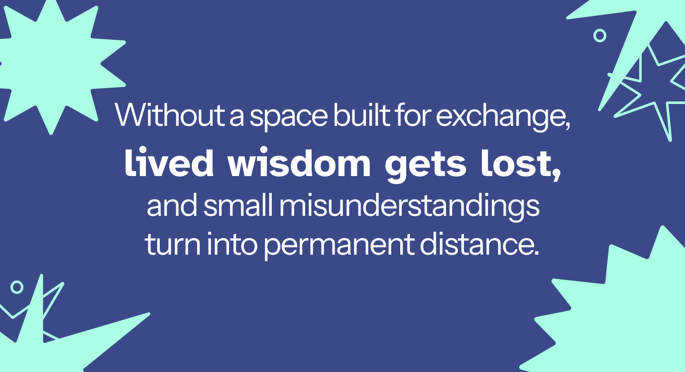
03 Research
One of our key findings:
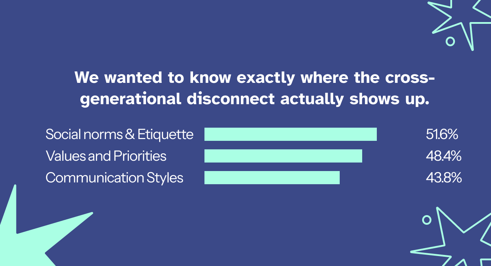
Both generations also wanted to learn and teach each other on a lot of the same few topics, from life outlook to mental health, showing the exchange wasn't one-directional.
Through more primary & secondary research, we saw that storytelling offers this safe space. It's how humans have always passed down values and found common ground. It doesn't require agreement, just attention.
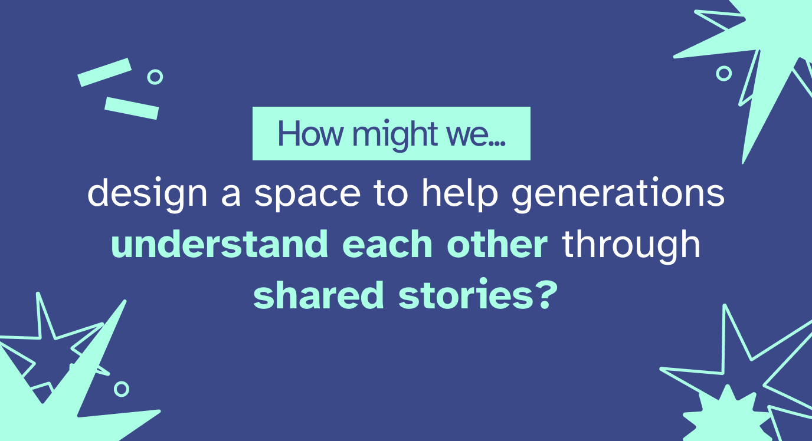
04 Process
My first instinct was to design daily prompts, so no one had to figure out what was worth sharing on their own.
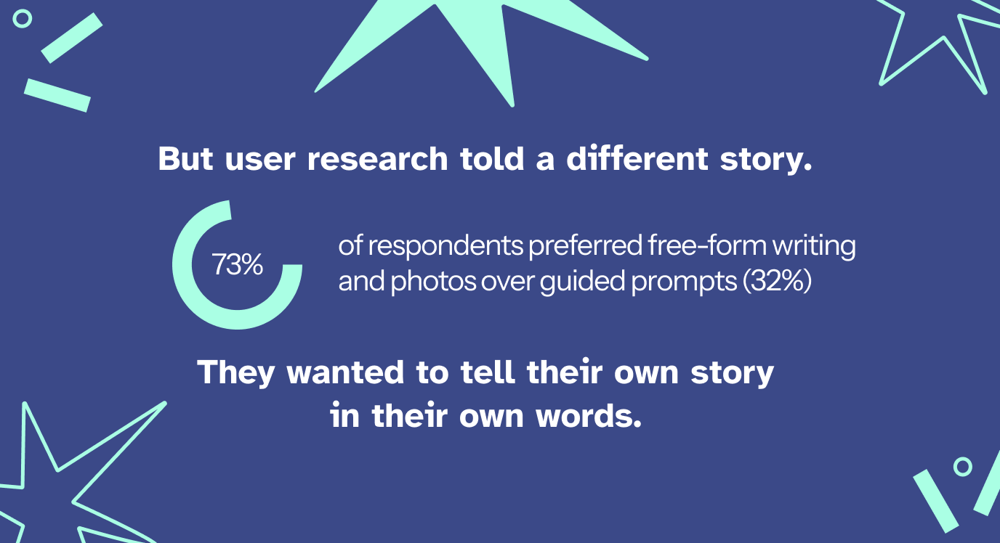
I spent most of my time iterating the onboarding flow, to give users the opportunity to tell their own story with structure.
I started by brainstorming features I wanted to add, from optional photos to emotion tags, then iterated based on feedback from mentors and users.
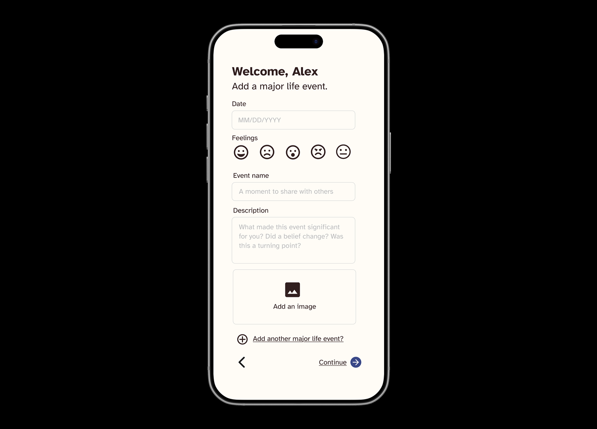
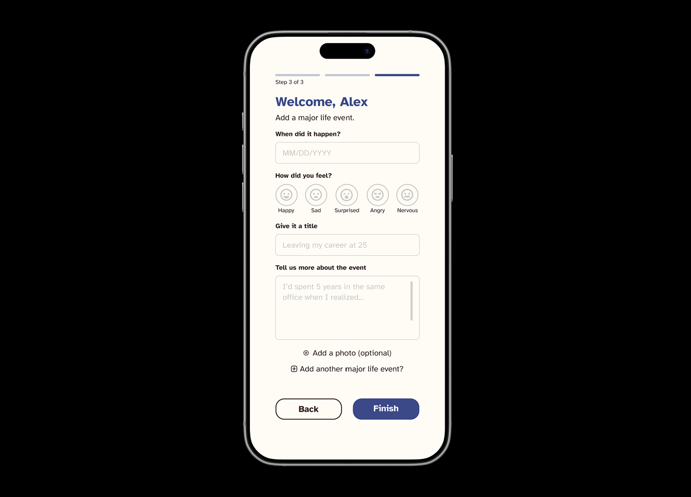
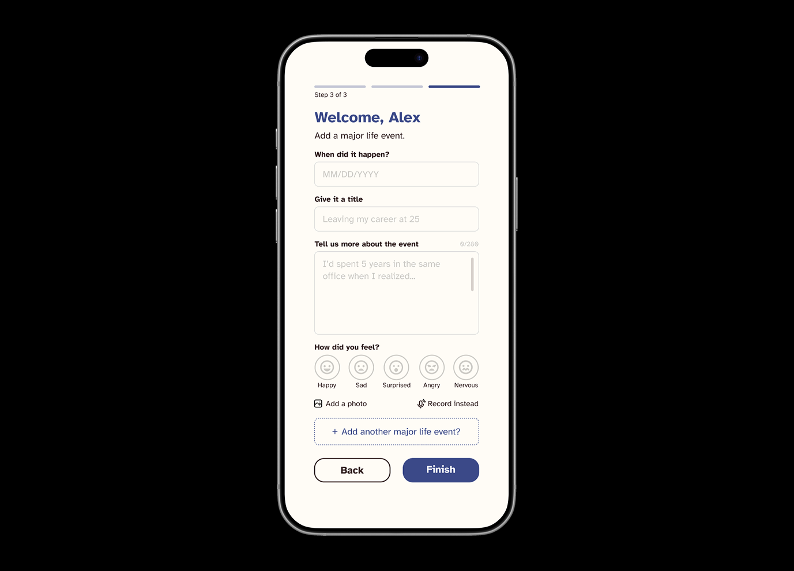
05 Solution
Users document milestones, giving context behind prompt responses instead of just the perspective itself. This lets both generations see how their unique experiences have shaped their thoughts and who they are.
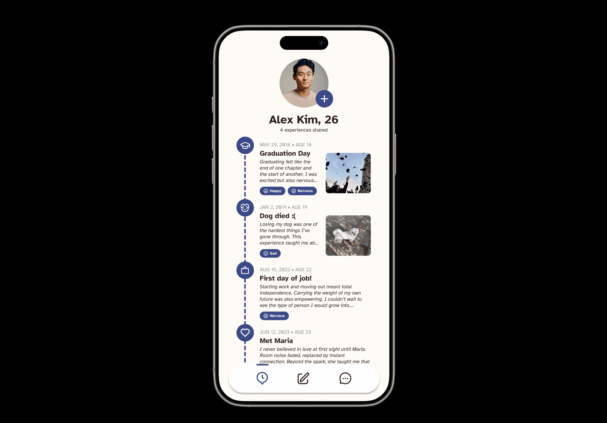
Optional photos, emoji-based emotion tags, and a simple chronological layout kept storytelling lightweight and human, without pressure to perform. A soft prompt ("Go a little deeper") encourages a fuller entry.
One guided question a day, sparking accessible storytelling across generations, for the days a blank page feels like too much.
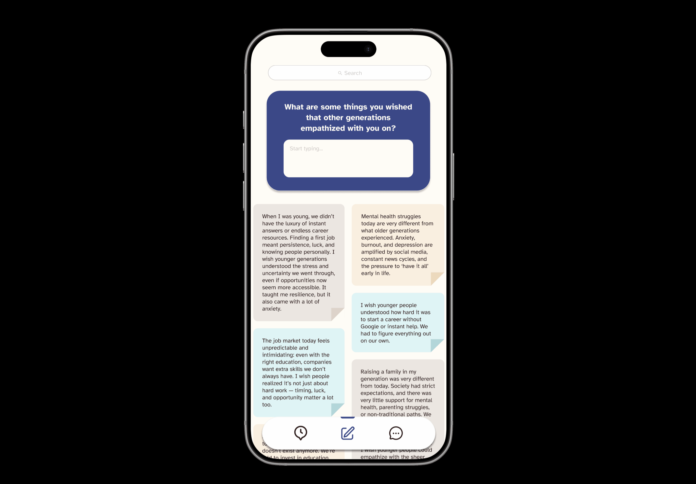
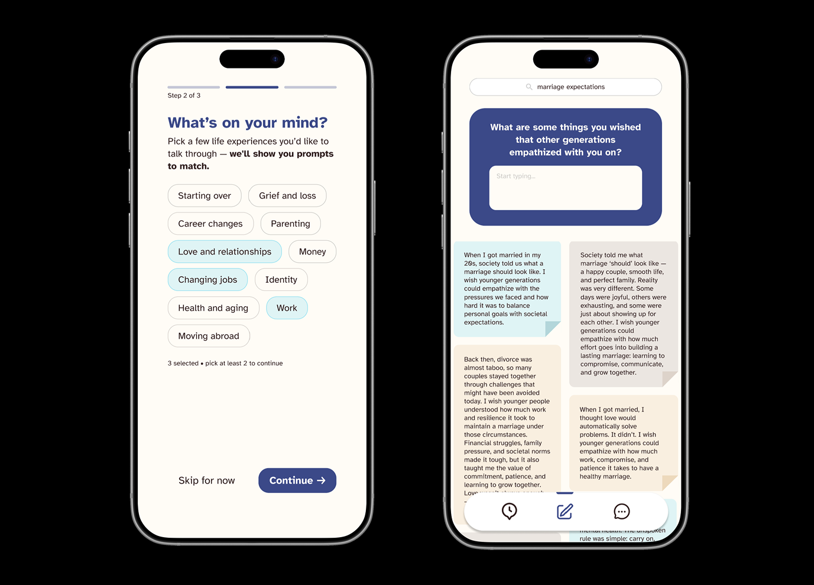
Prompts are personalized to the topics someone chooses during onboarding. Stories can also be searched by topic, letting users explore diverse and specific perspectives for different times in their lives.
06 Reflection
Design can't force two generations to agree. However, what it can do is surface the context that was missing.
And that turned out to be enough to shift the conversation from debate over to empathy.
We didn't place in the designathon, but the process taught me so much, like how to
turn a research insight into a real design, especially under pressure.
If I revisited
this, I'd spend even more time on the onboarding process, especially for older users who need a
gentler on-ramp than a 3 day sprint allowed us to design.
This was my first designathon, and my first real taste of high-stakes collaborative design work.
I can't wait to do it again next year!
If you participated in the 2026 Rice Designathon, I'd love to hear your experience! :)